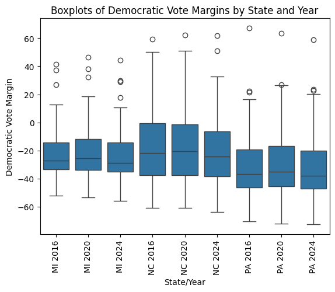
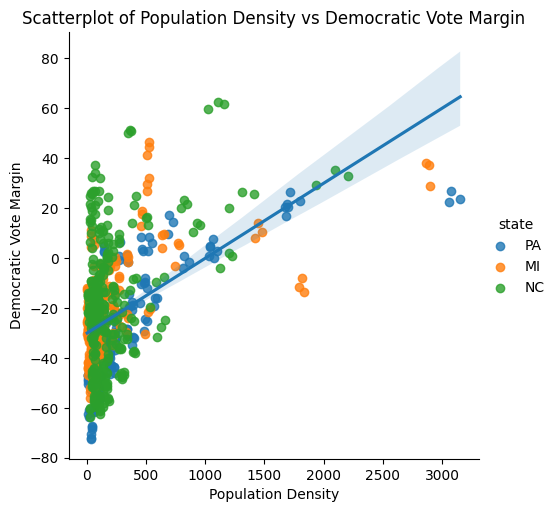
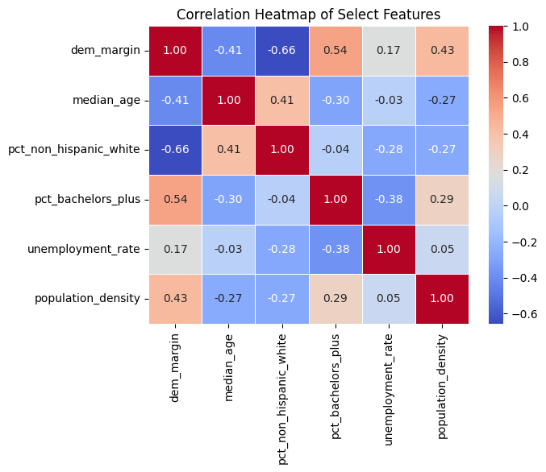
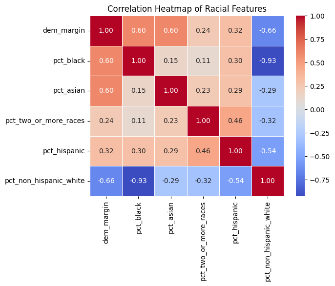
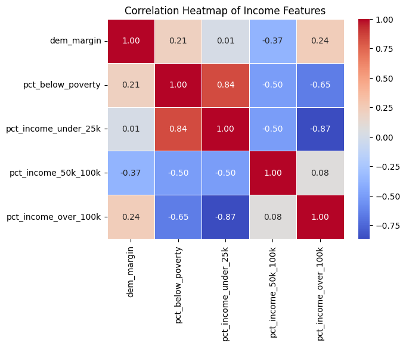
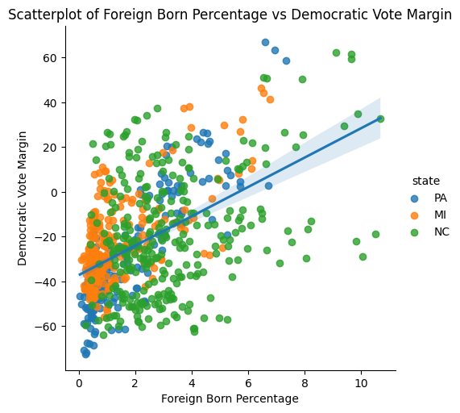
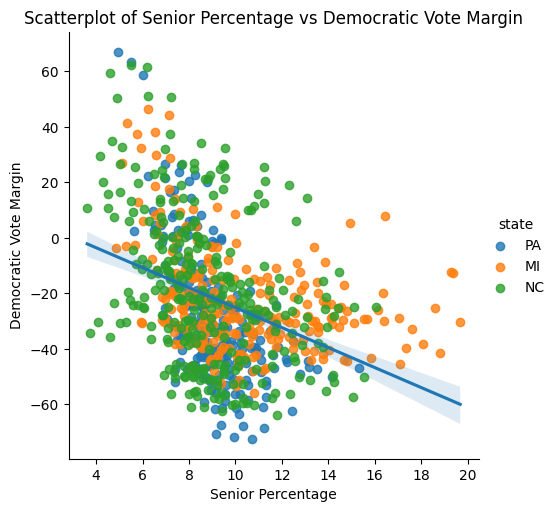
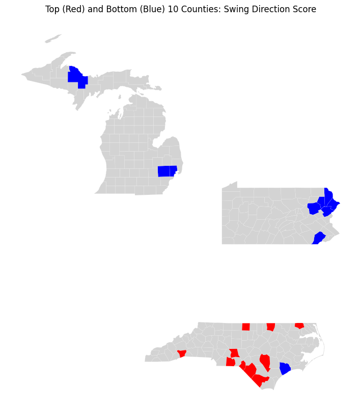
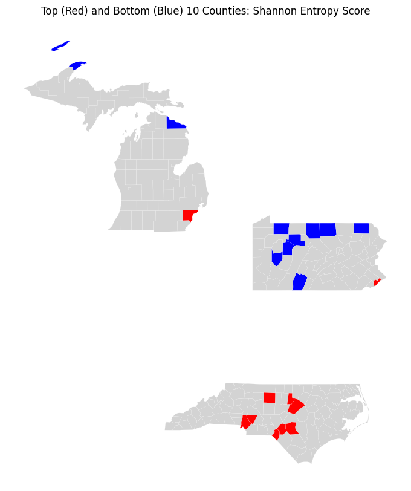
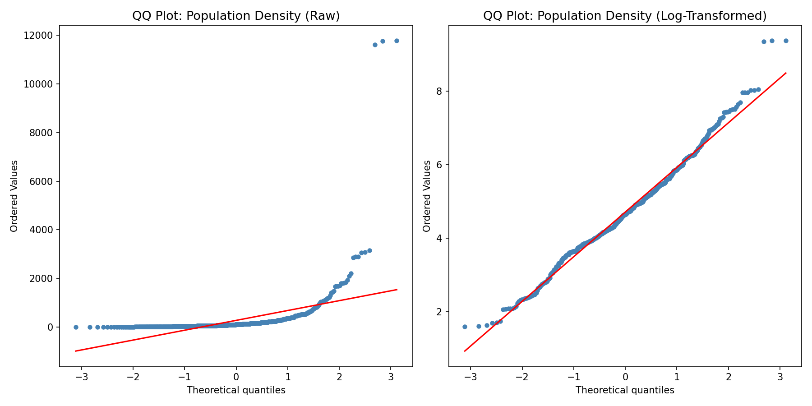

Data at a Glance
Three authoritative datasets were collected and integrated for this project. Each covers 250 counties across Pennsylvania, Michigan, and North Carolina for the 2016, 2020, and 2024 presidential elections. The NHGIS demographic panel was acquired programmatically via the IPUMS NHGIS API using the ipumspy Python library, providing county-level demographic rates from ACS 5-year estimates covering race/ethnicity, education, income distribution, housing, commuting, household structure, and population density. Supplemental age-bracket breakdowns and foreign-born population data were acquired from the Census Bureau API. Presidential election returns were sourced from the MIT Election Data and Science Lab. The integration was performed in two sequential left joins on the composite key (county_fips + election_year), with each merge verified to maintain exactly 750 rows with zero nulls introduced.
The Electoral Landscape

There are a few noticeable patterns in the county-level Democratic vote margin distributions. At least one strong positive outlier appears for each state-year pair, driven by urban counties like Philadelphia in PA, Durham in NC, and Washtenaw in MI — but no negative outliers of comparable magnitude exist. All three states have fairly consistent Q1, median, and Q3 values across all three years, with a slightly higher median in 2020 compared to the other two years — the year the Democratic candidate won nationally. The medians are consistently well below zero, even for the state-year pairs in which the Democratic candidate won the state. This reflects a well-known structural pattern: Democratic candidates tend to win fewer counties than their Republican counterparts, but the counties they win tend to have higher populations and therefore carry more electoral weight.

Philadelphia County represents an extreme outlier in terms of population density (11,774 people per square mile) and was excluded from this plot. There is a clear positive correlation between population density and Democratic vote margin. A majority of the counties appear on the lower end of the population density range, below 500 people per square mile. The correlation between public transit usage and population density (r = 0.85) further reinforces that this axis captures a fundamental urban-rural divide — one that consistently emerges as the strongest geographic predictor of partisan lean in the dataset.
What Drives the Vote?

Non-Hispanic white percentage and median age both have a negative correlation with Democratic vote margin (r = −0.66 and r = −0.41, respectively), while bachelor's degree attainment, unemployment rate, and population density all have positive correlations — although unemployment rate's is quite weak (r = 0.17). The strongest positive correlates are educational attainment (r = 0.54) and population density (r = 0.43). None of the selected features has a particularly strong correlation with the others, suggesting they capture relatively independent dimensions of county character — a promising property for the multivariate clustering that follows.

There is a strong negative correlation between Democratic vote margin and non-Hispanic white percentage (r = −0.66), while the margin is positively correlated with each of the other racial groups to varying degrees — Black (r = 0.60), Asian (r = 0.60), Hispanic (r = 0.32), and two or more races (r = 0.24). While the white percentage is negatively correlated with each of the other races, its strongest negative correlation by a wide margin is with Black percentage (r = −0.93), reflecting the demographic composition of the study region where Black populations represent the primary non-white group. This near-perfect inverse relationship informs our later use of Shannon entropy as a composite diversity measure.

Democratic vote margin has almost no correlation with the percentage of the county earning below $25,000 (r = 0.01), a negative correlation with the $50,000–$100,000 income bracket (r = −0.37), and weak positive correlations with both the poverty rate (r = 0.21) and the percentage earning above $100,000 (r = 0.24). Although the poverty rate and income over $100,000 have a strong negative correlation with each other (r = −0.65), they have remarkably similar positive correlations with Democratic vote margin. This “hollowed-out middle” pattern likely reflects the composition of Democratic-leaning counties: urban areas that contain both concentrated poverty and affluent professional populations, reinforcing the need for multivariate approaches over univariate explanations.
Age & Immigration

There is a fairly strong positive correlation between foreign-born percentage and Democratic vote margin (r = 0.518). Three North Carolina counties where about 10% of the population is foreign-born illustrate how the same demographic feature can produce different political outcomes. Over the past three presidential elections, Durham County has consistently had a Democratic margin around +60, making it one of the two strongest Democratic counties in the dataset alongside Philadelphia. Mecklenburg County has been solidly blue with margins in the +30 to +35 range. Meanwhile, Duplin County has been solidly red, with Democratic margins ranging from −18.9 to −28.9 over the three elections. These cases demonstrate that immigration interacts with urbanicity, education, and economic structure in ways that a single correlation coefficient cannot capture.

The senior (65 and older) percentage has a negative correlation with Democratic vote margin of similar magnitude (r = −0.378) to the young adult positive correlation reported elsewhere in our analysis. All 15 county-year pairings with over 16% of their population being seniors fall above the regression line, meaning their actual Democratic margin is higher than the trendline would predict. These tend to be communities where other demographic factors — particularly educational attainment and proximity to metropolitan areas — partially offset the age effect.
Measuring Electoral Volatility
To move beyond static demographic snapshots, we engineered features that capture how counties change between elections. Two complementary approaches were developed: a directional swing score that measures the consistency and magnitude of partisan shifts across consecutive cycles, and a racial entropy index that summarizes demographic diversity into a single comparable metric. These engineered features, drawn from the county volatility dimension table (250 unique counties), provide the foundation for identifying the high-volatility electorates that will drive our clustering analysis.
Swing Direction Score
Drawing from the prior work of Chen and Patel (2021), the Directional Swing Index captures both the magnitude and consistency of electoral change. It is computed as the product of the Democratic margin shift from 2016–2020 and the shift from 2020–2024, scaled by 10,000 for interpretability. Negative values indicate a reversal in margin direction across cycles; positive values illustrate a consistent shift toward one party over three elections.

| County | State | Score |
|---|---|---|
| Strongest Reversals (Negative Scores — margin swung back) | ||
| Monroe County | PA | −677.1 |
| Pike County | PA | −597.0 |
| Lackawanna County | PA | −461.7 |
| Luzerne County | PA | −409.3 |
| Onslow County | NC | −393.9 |
| Oakland County | MI | −347.4 |
| Chester County | PA | −340.8 |
| Macomb County | MI | −328.1 |
| Marquette County | MI | −283.6 |
| Wayne County | PA | −282.7 |
| Most Consistent Shifts (Positive Scores — sustained one-direction movement) | ||
| Robeson County | NC | 2,185.5 |
| Anson County | NC | 978.0 |
| Scotland County | NC | 807.4 |
| Warren County | NC | 778.8 |
| Caswell County | NC | 748.8 |
| Sampson County | NC | 727.3 |
| Henderson County | NC | 629.5 |
| Gates County | NC | 625.2 |
| Montgomery County | NC | 604.6 |
| Columbus County | NC | 601.8 |
The geographic pattern is striking. All ten of the largest positive swings occur in North Carolina, indicating sustained movement toward one party over three elections. The positive extremes are larger in magnitude than the negative extremes, indicating that sustained one-direction shifts can be stronger than directional reversals. In contrast, the most negative scores — suggesting reversals in direction across cycles — cluster primarily in northeastern Pennsylvania (Monroe, Pike, Lackawanna, Luzerne), with a smaller pocket in Michigan (Oakland, Macomb, Marquette). A useful next step will be to identify swings by party direction and to investigate what demographic features distinguish these reversal counties from the consistent-shift counties.
Racial Diversity: Shannon Entropy
We utilized Shannon Entropy to summarize racial heterogeneity for temporal and geographic comparison. The index was normalized to include shares of non-Hispanic White, Black, Asian, and an “Other” residual category. The result is a diversity measure bounded in [0, 1]: 0 indicates a perfectly homogeneous county electorate, 1 illustrates maximum evenness across racial groups. This composite measure allows us to test whether overall diversity — rather than any single racial demographic — predicts electoral behavior.

| County | State | Entropy |
|---|---|---|
| Most Diverse (Highest Entropy) | ||
| Philadelphia County | PA | 0.904 |
| Mecklenburg County | NC | 0.882 |
| Durham County | NC | 0.876 |
| Guilford County | NC | 0.839 |
| Hoke County | NC | 0.836 |
| Cumberland County | NC | 0.831 |
| Wake County | NC | 0.826 |
| Scotland County | NC | 0.808 |
| Cabarrus County | NC | 0.802 |
| Wayne County | MI | 0.787 |
| Most Homogeneous (Lowest Entropy) | ||
| Jefferson County | PA | 0.150 |
| Bedford County | PA | 0.160 |
| Tioga County | PA | 0.170 |
| Armstrong County | PA | 0.171 |
| Potter County | PA | 0.174 |
| Presque Isle County | MI | 0.176 |
| Elk County | PA | 0.178 |
| Warren County | PA | 0.188 |
| Susquehanna County | PA | 0.188 |
| Keweenaw County | MI | 0.189 |
As expected, the counties with the highest racial entropy — those with the most evenly distributed population shares across racial/ethnic groups — are concentrated in major metropolitan areas, including Philadelphia County (PA) and large North Carolina metros such as the Charlotte/Mecklenburg area. In contrast, the lowest entropy counties (most racially homogeneous) appear in more rural regions, including parts of northern Michigan and several counties along the northern Pennsylvania border. Early analysis suggests a correlation between population density and racial entropy, reinforcing the broader pattern: the demographic features most predictive of partisan lean are themselves interrelated, supporting the case for multivariate clustering approaches that can disentangle these overlapping signals.
Preparing for Modeling

Several variables exhibit severe right skewness that would distort distance-based methods like k-means clustering. Population density is the most extreme case (skewness = 11.09, kurtosis = 146.6), driven by urban outliers like Philadelphia County at 11,774 people per square mile. The left panel shows the raw distribution's dramatic departure from normality. After applying a log(1+x) transformation (right panel), the distribution collapses to near-normality (skewness = 0.36, kurtosis = 0.67). Similar treatment was applied to total population, median household income, median home value, and median gross rent. StandardScaler standardization (zero mean, unit variance) was then applied to all 32 continuous features, producing a modeling-ready dataset where no single variable dominates the Euclidean distance calculations that drive k-means cluster assignment.